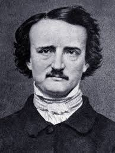
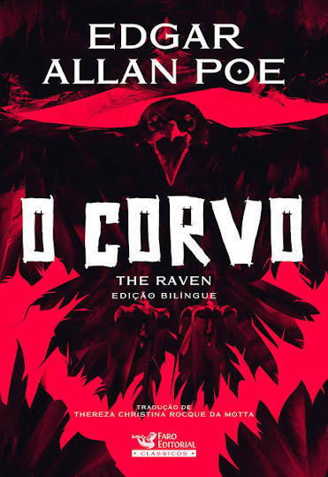
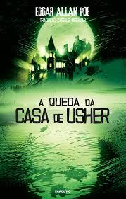
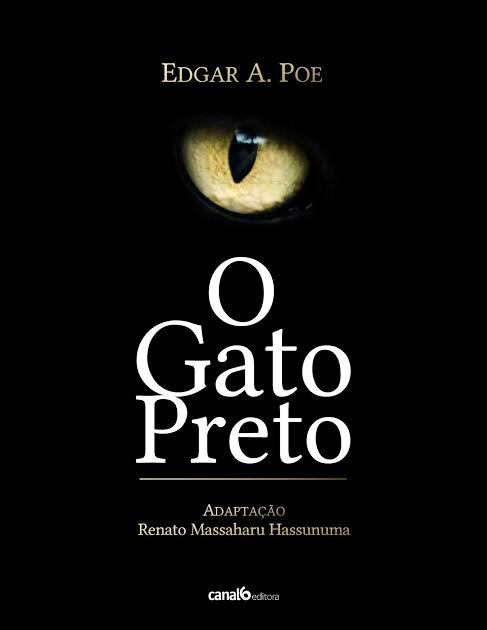
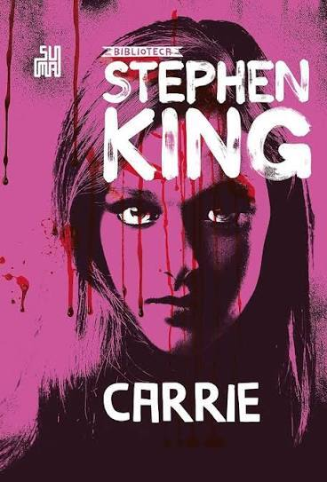
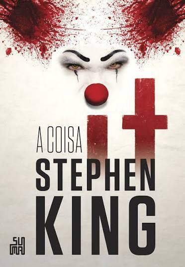

Tomie (1987)

Nesta página irei falar sobre alguns autores conhecidos do terror e suas principais obras.
Os autores foram escolhidos de acordo com meu gosto pessoal e com base em obras que gosto. Esta atividade também serviu para que eu conhecesse um pouco mais sobre a trajetória dos autores de obras que admiro.
Junji Ito é um mangaká japonês conhecido por suas histórias de horror grotesco, psicológico e cósmico. Seu estilo artístico é marcado por ilustrações detalhadas, expressões angustiantes e imagens que provocam desconforto.
Junji Ito nasceu em 1963 em Gifu, no Japão. Desde a infância, interessou-se por mangás de terror, recebendo influência de artistas como Kazuo Umezu. Antes de se dedicar profissionalmente aos quadrinhos, trabalhou como técnico em próteses dentárias e desenhava nas horas vagas. Em 1987, sua história, Tomie, recebeu uma menção honrosa em um concurso de mangás de horror, marcando o início de sua carreira profissional. Ao longo dos anos, Ito conquistou reconhecimento internacional e recebeu diversos prêmios por seu trabalho, incluindo o Eisner Award.

Edgar Allan Poe foi um escritor, poeta, editor e crítico literário norte-americano, considerado uma das figuras mais importantes da literatura gótica e do horror. Além de sua contribuição para o terror, Poe teve grande influência no desenvolvimento do conto policial moderno.
Edgar Poe nasceu no dia 19 de janeiro de 1809, em Boston, Estados Unidos. Filho de David Poe e de Elizabeth, foi abandonado pelo pai alcoólatra um ano após seu nascimento e perdeu a mãe dois anos depois. Poe foi criado pelo rico casal de comerciantes Francis e John Allan.
O pai adotivo de Edgar o enviu à Europa, para estudar renomadas instituições de ensino. Ao voltar para os Estados unidos entrou na Universidade da Virgínia, porém acabou abandonamdo os estudos e se envolveu com álcool e jogos. Pouco depois de abandonar a Universidade, Edgar se alistou nas forças armadas, mas acabou sendo expulso. Teve uma discussão com seu pai adotivo, o que acabou rompendo com o vínculo entre os dois.
Após isso Poe começou a se dedicar totalmente a lieratura. Após se tornar editor de uma revista e subir de cargo começou a promover seus contos, poemas e críticas. Passou a morar com uma tia viúva e sua prima, Virgínia Clemm com quem se casou em em 1836, que na época tinha apenas 13 anos.
Poe foi despedido do cargo na revista e pouco depois sua mulher adoeceu e morreu. Diante desses acontecimentos, Poe se perdeu mais ainda no consumo de álcool. Edgar Allan Poe faleceu em 7 de outubro de 1849 no Hospital Universitário de Washington. A causa da sua morte é incerta.



Stephen King é um escritor norte-americano, conhecido por suas obras de horror, suspense e ficção sobrenatural. Ele é amplamente reconhecido como um dos autores mais prolíficos e influentes do gênero de terror.
Stephen King nasceu em 1947, em Portland, Maine, Estados Unidos. Desde jovem, demonstrou interesse pela literatura e começou a escrever histórias de terror ainda na adolescência. Ele frequentou a Universidade do Maine, onde se formou em inglês. Começou a dar aulas para turmas de ensino médio por um tempo, mas logo resolveu seguir a carreira de escritor.
Durante seus primeiros anos como escritor enfrentou dificuldades financeiras e rejeições de editoras, mas continuou a escrever. Em 1974, Stephen King publicou seu primeiro romance, "Carrie", que se tornou um sucesso e lançou sua carreira literária. A partir daí, ele lançou vários outros livros de sucesso. Muitos de seus livros foram adaptados como filmes e séries de TV, tornando seu trabalho ainda mais conhecido.

